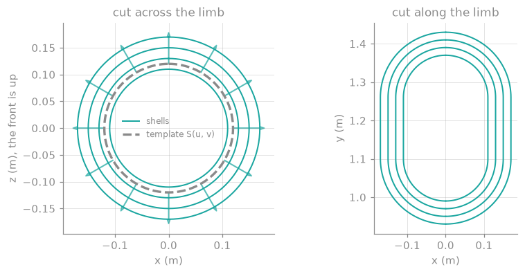
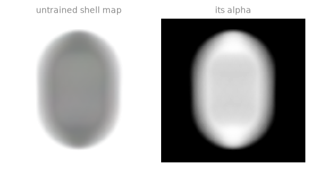
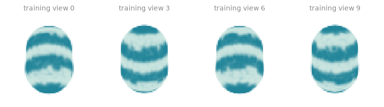
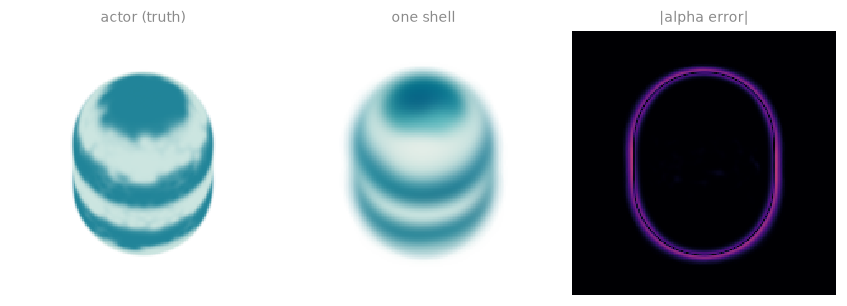
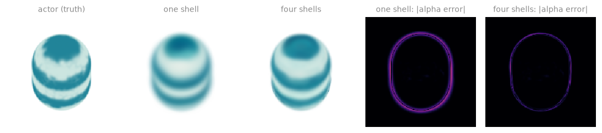
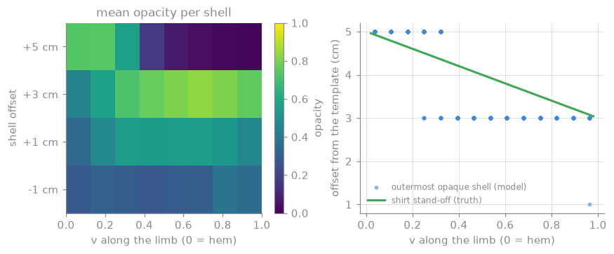
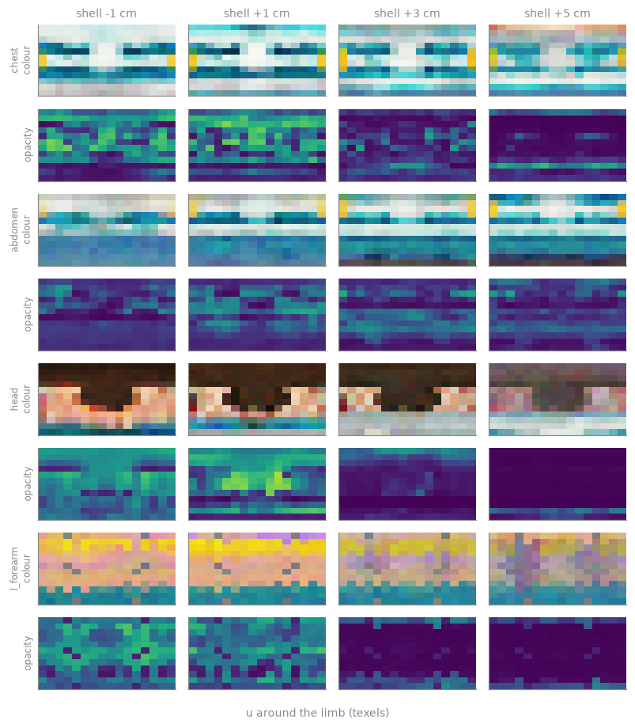
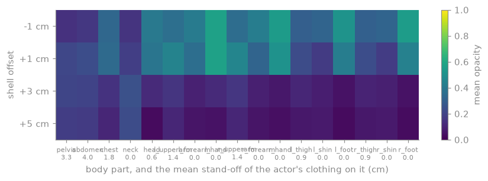
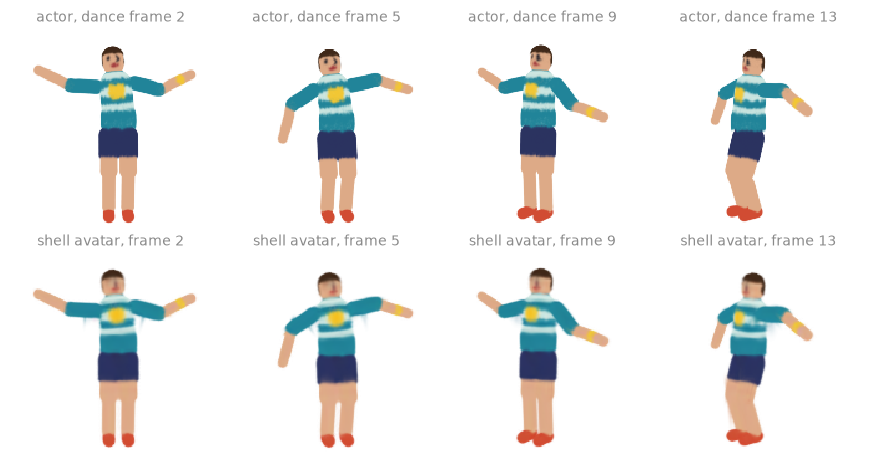
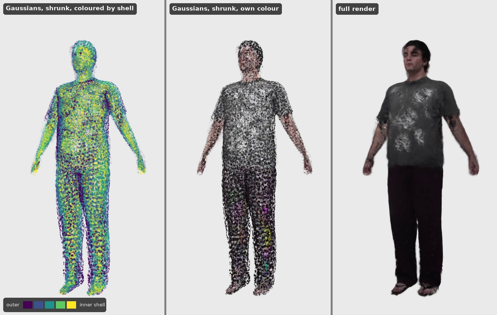

Gaussian Shell Maps: where do the Gaussians live?#
What you will learn
What a shell map is: a template surface, copies of it pushed out along the normal, and one texture per copy whose channels are Gaussian attributes.
How to build one from
cu.capsule_surface, first on one limb and then on the whole body, and how it matchescu.ShellAvatar.Why one shell on the body surface cannot represent loose clothing, and what several shells do about it.
Why the Gaussians stay attached to the body when it moves.
Prerequisites: Lesson 2b (rendering 3D Gaussians with
cu.render), Lesson 3a (forward kinematics) and
Lesson 3b (linear blend skinning with cu.lbs).
1. The question a representation has to answer#
Part 2 gave us a renderer: hand it Gaussians and a camera and it returns a picture. Part 3 gave us a body that moves. An avatar needs both, so it has to answer two questions.
Where are the Gaussians? They must follow the body, or the avatar cannot be re-posed.
Where are their colours, opacities and sizes stored? That storage is what a fit to a video will learn.
Free-floating Gaussians, as in the original splatting method [Kerbl et al., 2023], answer neither question for a moving person: nothing ties a Gaussian to an arm. Gaussian Shell Maps [Abdal et al., 2024] answer both with three ingredients.
A template surface \(S(u, v)\): a body surface with two surface coordinates. On our toy body every part is a capsule; \(u \in [0, 1)\) runs around the limb and \(v \in [0, 1]\) runs along it.
Shells: copies of the template pushed along the unit normal \(n(u, v)\) by fixed offsets \(d_1 < d_2 < \dots < d_K\),
\[S_k(u, v) = S(u, v) + d_k \, n(u, v).\]A texture per shell, \(T_k\): an image over \((u, v)\) with seven channels. Three are a colour, one is an opacity and three are sizes. A Gaussian sits at a fixed sample point \((u_i, v_i)\) on shell \(k_i\). Its position is \(S_{k_i}(u_i, v_i)\) and its attributes are read from the texture at the same coordinates, \(T_{k_i}(u_i, v_i)\).
The positions are fixed by the body. Only the textures are learned. The next cell draws the first two ingredients on one body part, the abdomen.
P = cu.part_index("abdomen")
offsets = (-0.01, 0.01, 0.03, 0.05) # metres along the normal: 1 cm inside to 5 cm outside
u_ring = torch.linspace(0, 1, 121)
fig, (a0, a1) = plt.subplots(1, 2, figsize=(8.6, 3.6))
for d in offsets: # a horizontal cut (v = 0.5) and a vertical cut (u = 0.25)
x, n, _, _ = cu.capsule_surface(P, u_ring, torch.full_like(u_ring, 0.5), offset=d)
a0.plot(cu.to_np(x[:, 0]), cu.to_np(x[:, 2]), color=cu.COLORS["shell"], lw=1.3, label=f"shell d = {100 * d:+.0f} cm")
for uu in (0.25, 0.75):
x, _, _, _ = cu.capsule_surface(P, torch.full_like(u_ring, uu), u_ring, offset=d)
a1.plot(cu.to_np(x[:, 0]), cu.to_np(x[:, 1]), color=cu.COLORS["shell"], lw=1.3)
x, n, _, _ = cu.capsule_surface(P, u_ring, torch.full_like(u_ring, 0.5))
a0.plot(cu.to_np(x[:, 0]), cu.to_np(x[:, 2]), color=cu.plotting.INK, lw=2.2, ls="--", label="template S(u, v)")
for i in range(0, 120, 10): # normals
a0.arrow(float(x[i, 0]), float(x[i, 2]), 0.05 * float(n[i, 0]), 0.05 * float(n[i, 2]), color=cu.COLORS["shell"],
width=0.0008, head_width=0.006, alpha=0.6)
a0.set_aspect("equal"); a0.set_xlabel("x (m)"); a0.set_ylabel("z (m), the front is up"); a0.set_title("cut across the limb")
a1.set_aspect("equal"); a1.set_xlabel("x (m)"); a1.set_ylabel("y (m)"); a1.set_title("cut along the limb")
handles, labels = a0.get_legend_handles_labels()
a0.legend([handles[0], handles[-1]], ["shells", labels[-1]], loc="center", fontsize=8);

The dashed line is the template, and the arrows are its normals. Each shell is the same shape, a little smaller or larger. The innermost shell is inside the body, which is deliberate: the true surface of a fitted person is not exactly the template, and it may be on either side of it.
Shells are copies of the template surface pushed out along the normal, here at -1, +1, +3 and +5 cm. Each shell unrolls into its own texture, and Gaussians at fixed (u, v) points read their colour and opacity from it. A loose shirt that one surface cannot reach is picked up by an outer shell, and every layer follows the bone when the elbow bends. The textures shown are binned from the toy actor's true surface, not from a fit.
Explore it in 3D
2. One limb, step by step#
2.1 Sample points and positions#
cu.sample_uv returns sample points \((u_i, v_i)\) on a regular grid. Lesson 4b looks
at this choice closely; here we take it as given. Every shell uses the same sample points, so the Gaussians
of one \((u_i, v_i)\) on different shells are stacked along one normal.
_, u, v = cu.sample_uv(900.0, parts=[P]) # about 900 points per square metre
N1 = u.numel()
def limb_points(offsets):
"""Positions (K*N1, 3), local frames (K*N1, 3, 3) and shell index (K*N1,) on body part P."""
pts, frames, shell = [], [], []
for k, d in enumerate(offsets):
x, n, t_u, t_v = cu.capsule_surface(P, u, v, offset=d)
pts.append(x); frames.append(torch.stack([t_u, t_v, n], -1)); shell.append(torch.full((N1,), k))
return torch.cat(pts), torch.cat(frames), torch.cat(shell)
pts, frames, shell = limb_points(offsets)
base = cu.capsule_surface(P, u, v)[0].repeat(len(offsets), 1)
gap = (pts - base).norm(dim=1)
print(N1, "sample points per shell,", pts.shape[0], "Gaussians on", len(offsets), "shells")
for k, d in enumerate(offsets):
assert torch.allclose(gap[shell == k], torch.full((N1,), abs(d)), atol=1e-6)
print("distance of every shell point from its template point equals |d_k|: checked")
280 sample points per shell, 1120 Gaussians on 4 shells
distance of every shell point from its template point equals |d_k|: checked
capsule_surface also returns a local frame at every point: the tangent along \(u\), the tangent along \(v\) and
the normal. The frame gives each Gaussian its orientation. A Gaussian on a surface should be a flat disc lying
in the surface, so two of its axes follow the tangents and the short one follows the normal.
2.2 The texture and the lookup#
The texture of one shell is a small image with 7 channels. The raw channel values are unconstrained numbers; fixed functions turn them into valid attributes:
where \(\sigma\) is the logistic function (it keeps colour and opacity in \((0, 1)\)) and \(s_0\) is a base size tied to the spacing between samples. The covariance of the Gaussian is built from the local frame \(F\) (its columns are the two tangents and the normal) exactly as in Lesson 2b:
TH, TW = 12, 16 # texture height (along v) and width (around u)
def new_texture(K, seed=0):
tex = torch.zeros(K, 7, TH, TW)
tex[:, 0:3] = 0.1 * cu.randn(K, 3, TH, TW, generator=cu.generator(seed)) # grey with a little noise
tex[:, 3] = math.log(0.1 / 0.9) # opacity 0.1 after the logistic function
return tex # sizes: exp(0) = 1 times the base size
def lookup(tex):
"""Read every shell's texture at the sample points (u, v). Returns (K*N1, 7). Bilinear, wrapping in u."""
K = tex.shape[0]
wrapped = torch.cat([tex[..., -1:], tex, tex[..., :1]], -1) # one extra texel on each side in u
gx = (u * TW + 1) / (TW + 2) * 2 - 1
grid = torch.stack([gx, v * 2 - 1], -1)[None, :, None, :].expand(K, -1, -1, -1)
out = F.grid_sample(wrapped, grid, mode="bilinear", padding_mode="border", align_corners=False)
return out[..., 0].permute(0, 2, 1).reshape(-1, 7)
def limb_gaussians(tex, pts, frames, spacing=1 / 30.0):
a = lookup(tex)
colors, opacity = torch.sigmoid(a[:, 0:3]), torch.sigmoid(a[:, 3])
s = spacing * torch.tensor([0.75, 0.75, 0.25]) * torch.exp(a[:, 4:7].clamp(-3, 2))
L = frames * s[:, None, :]
return pts, L @ L.transpose(-1, -2), colors, opacity
limb_cam = lambda az, el=0, size=64: cu.orbit_camera(az, elevation_deg=el, radius=3.0, target=(0, 1.18, 0),
fov_deg=12, size=size)
tex0 = new_texture(len(offsets))
img, alpha = cu.render(*limb_gaussians(tex0, pts, frames), limb_cam(30, 20, 128))
print("texture:", tuple(tex0.shape), "= (shells, channels, height, width) ->", tex0.numel(), "numbers for", pts.shape[0], "Gaussians")
cu.show_images([img, alpha], ["untrained shell map", "its alpha"], size=2.4, cmap="gray", vmax=1);
texture: (4, 7, 12, 16) = (shells, channels, height, width) -> 5376 numbers for 1120 Gaussians

The untrained shell map is a grey, half-transparent capsule. Every Gaussian is in the right place before any learning has happened. That is the point of the representation: geometry comes from the template, and the fit only has to paint it.
2.3 Failure first: one shell on the body surface#
The toy actor wears a loose shirt. Its Gaussians do not sit on the capsule. They stand off it by a few
centimetres, and more at the hem than at the top (actor.standoff). We cut the abdomen out of the actor and
use it as the target.
actor = cu.ToyActor()
on_limb = actor.part == P
target = [g[on_limb] for g in actor.gaussians()] # the actor's Gaussians on this part: means, cov, colour, opacity
so = actor.standoff[on_limb]
print(f"true stand-off of the shirt on this part: {100 * float(so.min()):.1f} to {100 * float(so.max()):.1f} cm")
train_cams = [limb_cam(az, el) for az in range(0, 360, 45) for el in (-20, 20)]
with torch.no_grad():
train_views = [cu.render(*target, c, bg=(0.0, 0.0, 0.0)) for c in train_cams] # (premultiplied colour, mask)
cu.show_images([cu.composite_on(*train_views[i]) for i in (0, 3, 6, 9)],
[f"training view {i}" for i in (0, 3, 6, 9)], size=1.8);
true stand-off of the shirt on this part: 3.0 to 5.0 cm

Now fit a shell map to these 16 views. The loop is a plain photometric fit: render, compare with the view, step the texture. Lesson 5a takes this loop apart; for now read it as “gradient descent on the texture”.
def fit_limb(offsets, iters=200, seed=0):
pts, frames, shell = limb_points(offsets)
tex = new_texture(len(offsets), seed).requires_grad_(True)
opt = torch.optim.Adam([tex], lr=0.05)
g = cu.generator(seed)
for _ in range(iters):
i = int(cu.randint(0, len(train_cams), (1,), generator=g))
bg = cu.rand(3, generator=g)
img, alpha = cu.render(*limb_gaussians(tex, pts, frames), train_cams[i], bg=bg)
rgb, mask = train_views[i]
loss = (img - cu.composite_on(rgb, mask, bg)).abs().mean() + 0.5 * (alpha - mask).abs().mean()
opt.zero_grad(); loss.backward(); opt.step()
return tex.detach(), pts, frames, shell
test_views = [(20, 0), (110, 40), (200, -40), (300, 50), (0, 60)] # (azimuth, elevation), none in training
@torch.no_grad()
def limb_score(model):
tex, pts, frames, _ = model
G = limb_gaussians(tex, pts, frames)
return float(np.mean([cu.psnr(cu.render(*G, limb_cam(az, el, 128))[0], cu.render(*target, limb_cam(az, el, 128))[0])
for az, el in test_views]))
t0 = time.perf_counter()
one = fit_limb((0.0,))
psnr_one = limb_score(one)
print(f"one shell on the body surface: {psnr_one:.1f} dB on new views ({time.perf_counter() - t0:.0f} s)")
one shell on the body surface: 23.8 dB on new views (2 s)
@torch.no_grad()
def limb_render(model, az=30, el=50, size=160):
tex, pts, frames, _ = model
return cu.render(*limb_gaussians(tex, pts, frames), limb_cam(az, el, size))
truth_img, truth_alpha = cu.render(*target, limb_cam(30, 50, 160))
img1, alpha1 = limb_render(one)
cu.show_images([truth_img, img1, (alpha1 - truth_alpha).abs()], ["actor (truth)", "one shell", "|alpha error|"],
size=2.6, vmax=1);

The single shell reproduces the stripes, but its outline is soft and it is too thin: the error image is a bright ring where the cloth should be. The Gaussians are pinned to the body surface, and the cloth is up to five centimetres outside it. The only thing the fit can do is to inflate the Gaussians until they reach the cloth, and a big Gaussian is a blurry one. The next cell confirms that this is what happened.
def thickness_mm(model):
"""Opacity-weighted mean size of the Gaussians along the normal, in millimetres."""
a = lookup(model[0])
o = torch.sigmoid(a[:, 3])
s_n = (1 / 30.0) * 0.25 * torch.exp(a[:, 6].clamp(-3, 2))
return 1e3 * float((o * s_n).sum() / o.sum())
thick_one = thickness_mm(one)
print(f"one shell: mean size along the normal {thick_one:.1f} mm (it started at {1e3 / 30 * 0.25:.1f} mm)")
assert thick_one > 1.3 * (1e3 / 30 * 0.25), "the single shell was expected to inflate its Gaussians"
one shell: mean size along the normal 20.5 mm (it started at 8.3 mm)
2.4 The fix: several shells#
With four shells between 1 cm inside and 5 cm outside the template, there is a shell near the cloth wherever the cloth is. The fit does not move any Gaussian. It only decides, through the opacity channel, which of the stacked Gaussians are switched on.
t0 = time.perf_counter()
four = fit_limb(offsets)
psnr_four = limb_score(four)
print(f"one shell: {psnr_one:.1f} dB on new views")
print(f"four shells: {psnr_four:.1f} dB on new views ({time.perf_counter() - t0:.0f} s)")
assert psnr_four > psnr_one + 1.5, "four shells should beat one shell clearly on the loose shirt"
img4, alpha4 = limb_render(four)
cu.show_images([truth_img, img1, img4, (alpha1 - truth_alpha).abs(), (alpha4 - truth_alpha).abs()],
["actor (truth)", "one shell", "four shells", "one shell: |alpha error|", "four shells: |alpha error|"],
size=2.0, vmax=1);
one shell: 23.8 dB on new views
four shells: 29.3 dB on new views (1 s)

The outline is now crisp and the ring in the error image is nearly gone. Which shells did the fit switch on? The left panel below shows the mean opacity of every shell along the limb (\(v = 0\) is the hem, \(v = 1\) the top). The green line is the true stand-off of the shirt.
tex4, _, _, shell4 = four
opacity = torch.sigmoid(lookup(tex4)[:, 3])
bins = torch.linspace(0, 1, 9)
vv = v.repeat(len(offsets))
table = torch.stack([torch.stack([opacity[(shell4 == k) & (vv >= bins[b]) & (vv < bins[b + 1])].mean()
for b in range(8)]) for k in range(len(offsets))])
# the outermost shell that is switched on at each sample point is the surface a camera sees
on = (opacity.reshape(len(offsets), N1) > 0.5)
outer = torch.tensor(offsets)[:, None].expand(-1, N1).masked_fill(~on, -1.0).max(0).values
fig, (a0, a1) = plt.subplots(1, 2, figsize=(9.0, 3.2))
im = a0.imshow(cu.to_np(table), origin="lower", aspect="auto", cmap="viridis", vmin=0, vmax=1,
extent=(0, 1, -0.5, len(offsets) - 0.5))
a0.set_yticks(range(len(offsets)), [f"{100 * d:+.0f} cm" for d in offsets]); a0.grid(False)
a0.set_xlabel("v along the limb (0 = hem)"); a0.set_ylabel("shell offset"); a0.set_title("mean opacity per shell")
fig.colorbar(im, ax=a0, label="opacity")
seen = outer > -0.5
a1.scatter(cu.to_np(v[seen]), 100 * cu.to_np(outer[seen]), s=8, color=cu.COLORS["gaussian"], alpha=0.5,
label="outermost opaque shell (model)")
order = torch.argsort(actor.v[on_limb])
a1.plot(cu.to_np(actor.v[on_limb][order]), 100 * cu.to_np(so[order]), color=cu.COLORS["truth"], label="shirt stand-off (truth)")
a1.set_xlabel("v along the limb (0 = hem)"); a1.set_ylabel("offset from the template (cm)"); a1.legend(fontsize=8)
hem = float(outer[seen & (v > 0.05) & (v < 0.3)].mean())
top = float(outer[seen & (v > 0.5) & (v < 0.95)].mean())
print(f"mean offset of the outermost opaque shell: {100 * hem:.1f} cm near the hem, {100 * top:.1f} cm near the top")
assert hem > top + 0.005, "the outer shell should be switched on at the hem, where the shirt flares out"
mean offset of the outermost opaque shell: 4.9 cm near the hem, 3.0 cm near the top

The outermost shell is opaque near the hem and transparent near the top, where the shirt is closer to the body. The model has recovered the flare of the shirt, without any parameter that moves a Gaussian. With four shells the surface can only be placed at four distances, so the blue dots form steps around the green line. Each Gaussian’s thickness along the normal fills the gaps between the steps.
3. The whole body, and cu.ShellAvatar#
The body has 17 parts. A whole-body shell map repeats the construction for every part and stores one texture
tile per part and shell, so the texture has the shape (shells, parts, 7, height, width). cu.ShellAvatar is
this model. The next cell rebuilds its Gaussians from the pieces above and compares.
avatar = cu.ShellAvatar() # 4 shells, tiles of 12 x 16 texels
with torch.no_grad():
avatar.texture.copy_(cu.randn(*avatar.texture.shape, generator=cu.generator(1))) # any texture will do
part, u_all, v_all = cu.sample_uv(900.0)
K = len(avatar.offsets)
def tile_lookup(tile, uu, vv):
"""Bilinear lookup in one (7, th, tw) tile, wrapping in u."""
tw = tile.shape[-1]
wrapped = torch.cat([tile[..., -1:], tile, tile[..., :1]], -1)[None]
grid = torch.stack([(uu * tw + 1) / (tw + 2) * 2 - 1, vv * 2 - 1], -1)[None, :, None, :]
return F.grid_sample(wrapped, grid, mode="bilinear", padding_mode="border", align_corners=False)[0, :, :, 0].T
pts, frames, attrs = [], [], []
for k, d in enumerate(avatar.offsets): # shells, then parts: the order ShellAvatar uses
for p in range(cu.N_PARTS):
m = part == p
x, n, t_u, t_v = cu.capsule_surface(p, u_all[m], v_all[m], offset=d)
pts.append(x); frames.append(torch.stack([t_u, t_v, n], -1))
attrs.append(tile_lookup(avatar.texture[k, p].detach(), u_all[m], v_all[m]))
pts, frames, attrs = torch.cat(pts), torch.cat(frames), torch.cat(attrs)
err_pts = float((pts - avatar.rest_points).abs().max())
err_frame = float((frames - avatar.rest_frame).abs().max())
err_attr = float((attrs - avatar.sample_texture().detach()).abs().max())
print(f"{pts.shape[0]} Gaussians | max difference: positions {err_pts:.1e}, frames {err_frame:.1e}, attributes {err_attr:.1e}")
assert pts.shape[0] == avatar.n_gaussians and err_pts < 1e-6 and err_frame < 1e-6 and err_attr < 1e-4
9308 Gaussians | max difference: positions 0.0e+00, frames 0.0e+00, attributes 0.0e+00
Our construction and the library’s agree. From here on we use cu.ShellAvatar.
3.1 One shell against four on the whole actor#
We repeat the experiment of Section 2 on the whole person, with a video of the actor turning in place at
64 pixels. cu.fit is the same loop as fit_limb. To keep the comparison fair, the single-shell avatar gets
four times the sampling density, so both avatars have about the same number of Gaussians.
poses, trans = cu.motion("turn", 16)
video = cu.make_video(actor, poses, trans, size=64)
models = {"one shell": cu.ShellAvatar(offsets=(0.0,), density=3600.0), "four shells": cu.ShellAvatar()}
scores = {}
for name, model in models.items():
hist = cu.fit(model, video, iters=120)
scores[name] = cu.evaluate(model, video)
print(f"{name:11s}: {model.n_gaussians} Gaussians, {hist['seconds']:.0f} s, PSNR {scores[name]['mean_psnr']:.2f} dB, "
f"inside the mask {scores[name]['mean_psnr_fg']:.2f} dB")
gain_body = scores["four shells"]["mean_psnr"] - scores["one shell"]["mean_psnr"]
print(f"four shells - one shell: {gain_body:+.2f} dB on the whole frame (one limb, close up: {psnr_four - psnr_one:+.2f} dB)")
one shell : 9435 Gaussians, 2 s, PSNR 39.21 dB, inside the mask 32.05 dB
four shells: 9308 Gaussians, 2 s, PSNR 39.21 dB, inside the mask 32.43 dB
four shells - one shell: -0.00 dB on the whole frame (one limb, close up: +5.52 dB)
Read the last line honestly. On the whole frame the gain from extra shells is much smaller than it was on the close-up of one limb. At 64 pixels one pixel covers about three centimetres of the person, so a shirt that stands five centimetres off the body is an error of one or two pixels at the outline, and most pixels are not at the outline. Shells matter in proportion to how closely you look. The real pipeline trains at 512 pixels and looks at 4K renders, where a few centimetres are many pixels.
The structure the fit found is the same as on the single limb. The next figure shows the texture itself, for four parts: colour tiles on top, opacity tiles below, one column per shell.

Each tile is a tiny image: 16 texels around the limb and 12 along it. The stripes of the shirt and the yellow logo are visible in the chest and abdomen tiles, the face and hair in the head tile. The opacity tiles (yellow is opaque) show where each shell is switched on. The coordinate \(u = 0\) is the front of the body, so the front logo is split between the left and right edges of its tile; Lesson 4b deals with that seam. Tiles that stay grey with low opacity were never needed, or were hidden behind an opaque shell and received no gradient.
with torch.no_grad():
op = torch.sigmoid(four_body.sample_texture()[:, 3])
per = torch.stack([torch.stack([op[(four_body.shell == k) & (four_body.part == p)].mean() for p in range(cu.N_PARTS)])
for k in range(K)])
standoff = torch.stack([actor.standoff[actor.part == p].mean() for p in range(cu.N_PARTS)])
fig, ax = plt.subplots(figsize=(9.0, 2.6))
im = ax.imshow(cu.to_np(per), cmap="viridis", vmin=0, vmax=1, aspect="auto"); ax.grid(False)
ax.set_xticks(range(cu.N_PARTS), [f"{n}\n{100 * float(s):.1f}" for n, s in zip(cu.PART_NAMES, standoff)], fontsize=7)
ax.set_yticks(range(K), [f"{100 * d:+.0f} cm" for d in four_body.offsets])
ax.set_xlabel("body part, and the mean stand-off of the actor's clothing on it (cm)"); ax.set_ylabel("shell offset")
fig.colorbar(im, ax=ax, label="mean opacity");
loose = [cu.part_index(n) for n in ("pelvis", "abdomen")]
tight = [cu.part_index(n) for n in ("l_forearm", "r_forearm", "l_shin", "r_shin")]
outer_loose, outer_tight = float(per[-1, loose].mean()), float(per[-1, tight].mean())
print(f"opacity of the outermost shell: {outer_loose:.2f} under the loose shirt, {outer_tight:.2f} on bare forearms and shins")
assert outer_loose > outer_tight + 0.03
opacity of the outermost shell: 0.18 under the loose shirt, 0.06 on bare forearms and shins

The outer shells hold opacity on the parts where clothing stands off the body, and stay nearly transparent on bare skin, where the inner shells do the work. One number per part is a coarse summary; the tiles above show the same thing texel by texel.
4. Why the Gaussians stay attached when the body moves#
A Gaussian’s rest position is a function of \((u, v)\) and the shell offset. It has no free position parameter, so nothing can drift. To pose the avatar we skin the rest positions exactly as Lesson 3b skinned surface points. Each Gaussian carries the skinning weights \(w_{ij}\) of its template point, the same for every shell, and
The matrix \(M_i\) that moves the centre also turns and stretches the axes \(L_i\), so a flat disc stays flat against the surface when the limb rotates.
d_poses, d_trans = cu.motion("dance", 16)
pose, tr = d_poses[5], d_trans[5]
A, _ = cu.skinning_transforms(pose, tr)
# skin the stacked Gaussians of the avatar and their template points with the same weights
posed, M = cu.lbs(four_body.rest_points, four_body.weights, A)
base_rest = torch.cat([cu.capsule_surface(p, four_body.u[(four_body.part == p) & (four_body.shell == 0)],
four_body.v[(four_body.part == p) & (four_body.shell == 0)])[0]
for p in range(cu.N_PARTS)]).repeat(K, 1)
base_posed, _ = cu.lbs(base_rest, four_body.weights, A)
dist = (posed - base_posed).norm(dim=1)
want = torch.tensor(four_body.offsets).abs()[four_body.shell]
print(f"distance to the posed template point, compared with |d_k|: median error {1e3 * float((dist - want).abs().median()):.3f} mm, "
f"largest {1e3 * float((dist - want).abs().max()):.1f} mm")
assert float((dist - want).abs().median()) < 1e-4
means, cov, _, _ = four_body.gaussians(pose, tr)
assert torch.allclose(means, posed, atol=1e-6) # the library does the same thing
distance to the posed template point, compared with |d_k|: median error 0.003 mm, largest 2.9 mm
For most Gaussians the distance to the template is unchanged to a fraction of a millimetre: where one joint dominates, \(M_i\) is a rigid motion, and a rigid motion preserves distances. Near joints the weights blend two transforms and the shells are squeezed or stretched a little, which is the linear-blend artefact of Lesson 3b showing up in the shells.
The avatar below was fitted only to a turn in place. Here it is in a dance pose it never saw, next to the actor in the same pose.
cam = cu.orbit_camera(20, size=160)
frames_shown = (2, 5, 9, 13)
with torch.no_grad():
rows = [actor.render(cam, d_poses[t], d_trans[t])[0] for t in frames_shown] + \
[four_body.render(cam, d_poses[t], d_trans[t])[0] for t in frames_shown]
cu.show_images(rows, [f"actor, dance frame {t}" for t in frames_shown] + [f"shell avatar, frame {t}" for t in frames_shown],
ncols=4, size=2.0);
drive = float(np.mean([cu.psnr(rows[i + 4], rows[i]) for i in range(4)]))
print(f"PSNR of the avatar against the actor in these unseen poses: {drive:.1f} dB")
assert drive > 22.0
PSNR of the avatar against the actor in these unseen poses: 29.4 dB

This is why the representation suits a drivable avatar. Appearance is stored in surface coordinates, and surface coordinates do not change when the body moves. It also suits clothing better than a single textured surface: a stack of shells is a thin volume around the body, so cloth, hair and shoes can sit at their own distance from the skin. What shells cannot do is move the cloth independently of the body. The shirt follows the skeleton rigidly; Lesson 7c returns to that.
From the real system#
Inside a fitted shell map. The author’s standard-track avatar in its rest pose, drawn three ways from the same model. Left: every Gaussian shrunk to 30 % of its size and coloured by the shell it is anchored on (purple is the outermost shell, yellow the innermost). Middle: the same shrunk Gaussians in their own colours. Right: the normal render. Notice that the five shells are layers a few centimetres apart around the body, that Gaussians from several layers are visible at once, and that the picture only becomes a surface when the Gaussians have their full size and overlap.

The toy shells in this lesson are capsules; the real ones are offset copies of the SMPL body surface, as described in the README.
In the real pipeline#
The real project keeps the Gaussian Shell Maps representation and fits it to one person. The template is the SMPL body mesh [Loper et al., 2015], not capsules, and the texture is one UV atlas per shell, not a tile per part.
This lesson |
Real pipeline |
|
|---|---|---|
Template |
17 capsules with analytic \((u, v)\) |
SMPL mesh with its UV layout; base shell chosen in |
Shells |
4, from 1 cm inside to 5 cm outside |
5 in the standard recipe; thinner shells on the hands in the hi-fi track |
Texture channels |
7: colour, opacity, 3 sizes |
11: colour, opacity, scale and a rotation quaternion; a twelfth channel holds a learned offset along the normal |
Fit |
|
|
Two differences deserve a comment. First, upstream GSM was trained as a generator: a network produces the shell textures for many different people. The project uses the same shells and optimises one texture directly, as this lesson does. Second, the steps in the last figure of Section 2.4 are a real limitation: a fixed set of shells quantises the distance from the body. The project’s realism recipe adds a learned per-texel offset of up to ±3 cm along the shell normal, so that “cloth that stands off the body gets its own geometry” (docs/realism_v4.md). Exercise 3 asks you to try the same idea on the toy limb.
Summary#
A shell map has a template surface, copies of it offset along the normal, and a texture per copy whose channels are Gaussian attributes. Gaussians sit at fixed \((u, v)\) points and read the texture.
Geometry comes from the template; the fit only learns the texture. An untrained shell map already has the shape of the body.
One shell on the body surface cannot represent cloth that stands off the body. It inflates its Gaussians to reach the cloth, and the outline turns soft. Several shells place opaque Gaussians at the right distance by switching shells on and off through opacity.
How much the extra shells are worth depends on how closely you look: a lot on a close-up of one limb, little on a whole body at 64 pixels.
Positions are functions of surface coordinates, and skinning moves them with the template, so the appearance stays attached to the body in any pose.
Exercises#
Fit the limb with two shells at offsets
(0.0, 0.04)and with eight shells from −1 cm to 6 cm. How does the PSNR on new views change with the number of shells? Where does it stop improving?In
limb_gaussians, the third size (along the normal) starts at a third of the other two. Make all three equal and render the untrained shell map from a grazing angle. What changes at the outline, and why are flat Gaussians the better default for a surface?Give the single-shell limb model one more learned texture channel: an offset along the normal, limited to ±6 cm with
0.06 * torch.tanh(...). Does one shell with a learned offset match four fixed shells?
Solution 1
for offs in [(0.0,), (0.0, 0.04), offsets, tuple(torch.linspace(-0.01, 0.06, 8).tolist())]:
print(len(offs), "shells:", round(limb_score(fit_limb(offs)), 1), "dB")
Two shells already recover most of the gap, because the second shell is close to the cloth. Beyond four the gain is small: the spacing between shells is then below the thickness of a Gaussian, and each added shell also adds Gaussians that must be rendered. The number of shells is a cost-quality trade-off, not a free parameter.
Solution 3
def fit_limb_offset(iters=200, seed=0):
x0, n, t_u, t_v = cu.capsule_surface(P, u, v)
frames = torch.stack([t_u, t_v, n], -1)
tex = torch.cat([new_texture(1, seed), torch.zeros(1, 1, TH, TW)], 1).requires_grad_(True) # 8 channels
opt = torch.optim.Adam([tex], lr=0.05)
g = cu.generator(seed)
def gaussians():
a = lookup(tex[:, :7])
wrapped = torch.cat([tex[:, 7:, :, -1:], tex[:, 7:], tex[:, 7:, :, :1]], -1)
grid = torch.stack([(u * TW + 1) / (TW + 2) * 2 - 1, v * 2 - 1], -1)[None, :, None, :]
d = 0.06 * torch.tanh(F.grid_sample(wrapped, grid, padding_mode="border", align_corners=False)[0, 0, :, 0])
s = (1 / 30) * torch.tensor([0.75, 0.75, 0.25]) * torch.exp(a[:, 4:7].clamp(-3, 2))
L = frames * s[:, None, :]
return x0 + d[:, None] * n, L @ L.transpose(-1, -2), torch.sigmoid(a[:, :3]), torch.sigmoid(a[:, 3])
for _ in range(iters):
i = int(cu.randint(0, len(train_cams), (1,), generator=g)); bg = cu.rand(3, generator=g)
img, alpha = cu.render(*gaussians(), train_cams[i], bg=bg)
rgb, mask = train_views[i]
loss = (img - cu.composite_on(rgb, mask, bg)).abs().mean() + 0.5 * (alpha - mask).abs().mean()
opt.zero_grad(); loss.backward(); opt.step()
return gaussians
The offset channel lets one shell follow the flare continuously, with a quarter of the Gaussians. It is harder to optimise than switching shells on and off: a Gaussian that starts far from the cloth gets little gradient telling it which way to move. The real recipe combines both, with several shells and a small learned offset on top.
References#
[Abdal et al., 2024] introduced Gaussian Shell Maps: shells around a body template with Gaussian attributes stored in textures.
[Kerbl et al., 2023] is the splatting renderer the Gaussians are drawn with.
[Loper et al., 2015] is the body model the real pipeline uses as its template.
Project documentation: README, Method and docs/realism_v4.md.